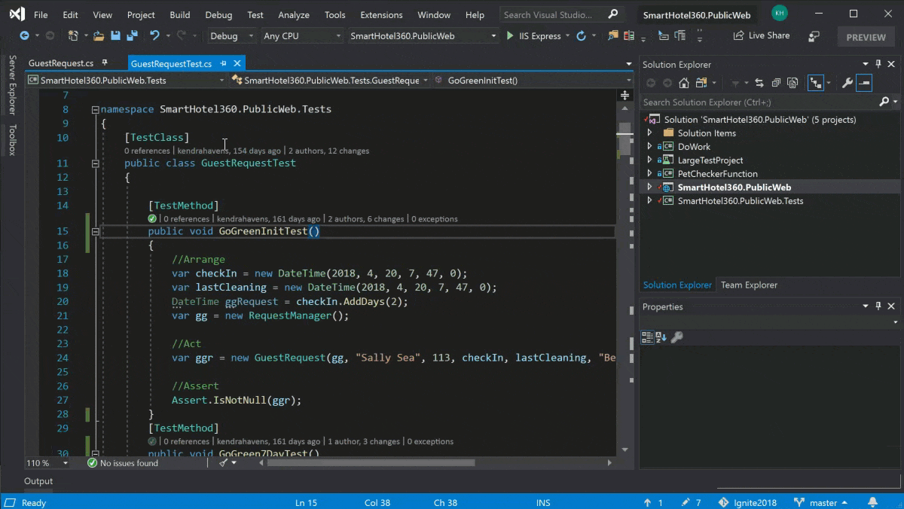

Rédiger du code avec moins d’erreurs

Tapez des variables rapidement et précisément avec IntelliSense
des suggestions de code si vous êtes bloqué.
Restez rapide, quelle que soit la complexité, lorsque vous accédez à un fichier,
un type, un membre ou une déclaration de symbole dont vous avez besoin.
Apportez des améliorations rapides à votre code en vous aidant des ampoules
qui suggèrent des actions, qu’il s’agisse par exemple de renommer
une fonction ou d’ajouter un paramètre.
En savoir plus sur votre code

CodeLens vous aide à retrouver facilement des insights importants,
tels que les modifications apportées à votre code, l’impact de ces
modifications et si votre méthode a fait l’objet de tests unitaires.
Consultez les références, les auteurs, les tests,
l’historique des validations et d’autres informations
essentielles en un clin d’œil.
Trouvez et corrigez rapidement vos bogues

Visual Studio vous permet d’interrompre l’exécution de code lorsque
vous voulez inspecter un bogue à l’aide du point d’arrêt
et de la méthode dont vous avez besoin.
Si vous avez exécuté une étape en trop ou si vous avez rencontré
une modification inattendue, vous pouvez revenir une étape
en arrière à une ligne de code spécifique (vous ne devez
pas redémarrer votre session ni recréer votre état).
Travailler efficacement

Parcourez et organisez aisément votre suite de tests pour pouvoir
analyser la quantité de code que vous testez
et voir les résultats instantanément.
Découvrez immédiatement l’impact de chaque modification que vous apportez
en laissant les fonctionnalités avancées tester le code à mesure que vous le tapez.
Résolvez les erreurs dès qu’elles se produisent et vérifiez si les
nouvelles modifications sont couvertes par les tests existants.